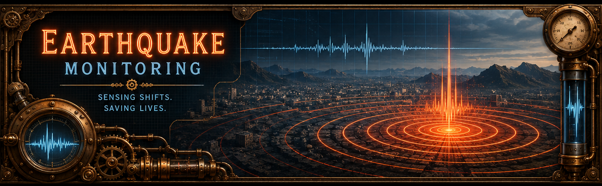

Live Earth Monitor
Quake Tracker + Volcano Display + Measurement Tools
Legend/Key
| Symbol | Meaning |
|---|---|
| Earthquake (Magnitude < 3) | |
| Earthquake (Magnitude 3–5.7) | |
| Earthquake (Magnitude > 5.7) | |
| 🌋 | Volcano (Static Location) |
| 💧 | Flood (NASA EONET active/recent events) |
| ☀ | Drought (NASA EONET current events if available) |
| 🌀 | Active Tropical Cyclone / Tropical Storm (NASA EONET open events) |
| 🔥 | Wildfire (NASA EONET open events) |
Live earthquake data can be loaded from USGS, EMSC, GFZ/GEOFON, or a combined deduplicated multi-agency option. ISC is not listed because its event service does not allow browser-side CORS fetches. Wildfire and tropical cyclone overlays use NASA EONET open events. Floods use active/recent EONET flood records because open flood events are not always exposed by the live endpoint. Drought appears only when EONET has current drought events available. Tropical events are filtered to hurricane, cyclone, typhoon, and tropical-storm style systems.
Important note: Volcano overlay is static and does not update in real-time. See Volcano Discovery live image on the Volcano Monitoring page for currently active volcanoes. Volcano map overlay is meant for reference only.